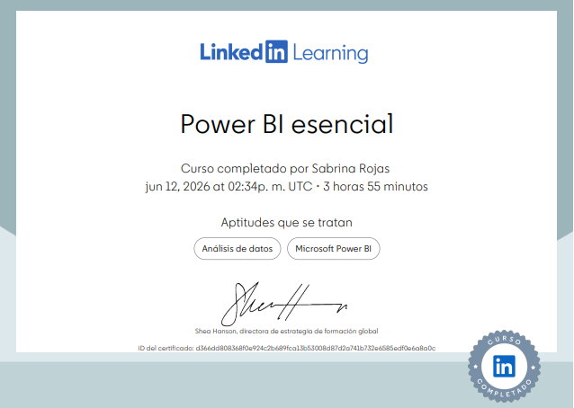
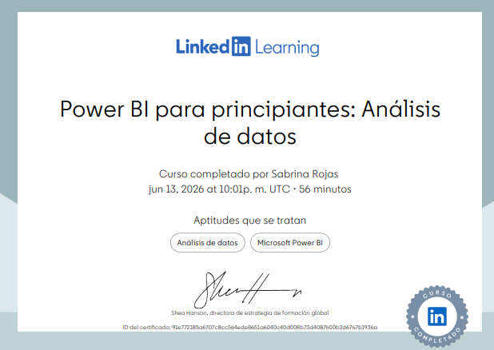

Aprende Excel
Curso completado por Sabrina Rojas
may 28, 2026
ID: 10dba6afcdf62acdca01e5646ba28217715885286a5dd2963cc78d9dcb5d6073
Analytics Engineer | BI Developer
Transformo datos crudos en dashboards estratégicos usando SQL, modelado dimensional y Power BI. Integro mi base en Frontend y UI/UX para crear productos de analítica limpios e intuitivos.
Formación universitaria orientada a la ingeniería de software, arquitectura de bases de datos y modelado analítico. Combino el rigor técnico con la formación continua en herramientas modernas de inteligencia de negocios.
Ingeniería de Sistemas | UNEFA (2026)
Especialización en SQL, Power BI, modelado de datos e integración web
Casos de estudio, arquitecturas de datos y soluciones analíticas desarrolladas con enfoque estratégico, desde el modelado en SQL hasta la visualización en Power BI e integración web.
Monitoreo de audiencia, tendencias de consumo y demanda musical en streaming.
Monitoreo de el comportamiento de compra, identificar los productos de mayor rotación y analizar el perfil de los clientes de la tienda.
Modelado relacional y normalización de bases de datos en PostgreSQL para el control de redes de distribución eléctrica.
-Capacidad para descomponer problemas complejos en partes manejables y diseñar soluciones eficientes.
-Explicar conceptos técnicos complejos en un lenguaje claro para clientes, gerentes o usuarios finales.
-Capacidad para aprender e incorporar nuevas tecnologías, librerías y marcos de trabajo de forma autónoma.
-Diseños de esquemas estrella/copo de nieve, optimización y consultas avanzadas en SQL (PostgreSQL, MySQL, SQLite). -Extracción, transformación y limpieza de datos (ETL/ELT) e integración con Power BI para Business Intelligence.
-Diagramado entidad-relación (ERD), diagramas UML, flujo de datos y estructuración de aplicaciones escalables.
-Manejo de lenguajes de programación y scripts en python. -Maquetado e integración web enfocado en la experiencia de usuario (React, Sass/CSS, HTML5).
Curso completado por Sabrina Rojas
may 28, 2026
ID: 10dba6afcdf62acdca01e5646ba28217715885286a5dd2963cc78d9dcb5d6073

Curso completado por Sabrina Rojas
jun 12, 2026
ID: d366dd808368f0e924c2b689fca13b53008d87d2a741b732e6585edf0e6a8a0c

Curso completado por Sabrina Rojas
jun 13, 2026
ID: 91e772185a6707c8cc564ede8651a6040c40d008b73d4087600b2d6767b1936a
Curso completado por Sabrina Rojas
Ago 21, 2024
ID: c3cadb2ef1e4ede0913bbfb1ed26140cda38d665590aba8a13b6efe5ae3f7114
Curso completado por Sabrina Rojas
Ago 21, 2024
ID: cdeba8304c2374f98976648eb2090f62e41998535b576d6dc5af02960f4e6711
Curso completado por Sabrina Rojas
Ago 21, 2024
ID: 49003cf8570b4004858f9868dcc001b870c60aec1567abef419236525884606c
Curso completado por Sabrina Rojas
Ago 22, 2024
ID: 9592999764bc85bab6e7edce6edbe3e980d092848d86046a053408b6a81ac81f
Curso completado por Sabrina Rojas
Ago 22, 2024
ID: dbcac4ef742233c3f8fbede547dde1324c579eb55252f20fc64efde9e951da7d